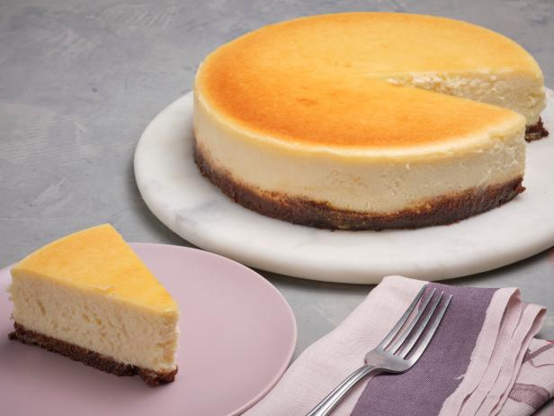

Cheese Cake

Description
This is the final product of the dumplings we are about to make. Stunning, isn't it?
It is a recipe that produces the perfect amount of sweetness and texture.
Ingredients
- 1 3/4 cups of Graham Cracker Crumbs
- 1 1/3 tbsp. of Sugar
- 2 pinches of Salt
- 4 tbsp. Unsalted Butter
- 2 pounds of Cream Cheese
- 2 tsp. of Vanilla Extract
- 2 pounds of Cream Cheese
- 4 Eggs
- 2/3 cups of Sour Cream
- 2/3 cups Heavy Cream
Steps
- For the Crust:
- Arrange a rack in the lower third of the oven and preheat to 350°F (175°C).
- Pulse the graham crackers in a food processor or blender until finely ground. Put in a large bowl, and stir in the sugar and salt. Stir in the melted butter.
- Use a 9x2 3/4-inch round springform pan. Gently press down on the crumbs using your fingers, until the crumbs are a nice even layer at the bottom of the pan, with maybe just a slight rise along the inside edges of the pan.
- Place the pan on a baking sheet and bake at 350°F (175°C) for 10 minutes. Remove from the oven and let cool.
- For the Cake:
- Cut the cream cheese into chunks and place in the bowl of an electric mixer fitted with the paddle attachment. Mix on medium speed for 4 minutes until smooth, soft and creamy. Add the sugar and beat for 4 minutes more.
- Add the salt and vanilla, mixing just until incorporated. Add the eggs, one at a time, mixing on low speed for 30 seconds after each addition. Remember to scrape down the sides of the bowl, and scrape up any thicker bits of cream cheese that have stuck to the bottom of the mixer that paddle attachment has failed to incorporate. Add the sour cream and mix on medium speed until incorporated.
- Add the heavy cream and mix on low speed until incorporated.
- Place the foil-wrapped springform pan in a large, high-sided roasting pan. Prepare 2 quarts of boiling water.
- Pour the cream cheese filling into the springform pan, over the graham cracker bottom layer. Smooth the top with a rubber spatula.
- Place the roasting pan with the springform pan in it into the oven on the lower rack.
- Without touching the hot oven, carefully pour the hot water into the roasting pan to create a water bath for the cheesecake, pouring until the water reaches halfway up the side of the springform pan, about 1 1/4 inches. (Alternatively, you can add the water before putting the pan in the oven, whichever is easier for you.)
- Bake at 325°F (160°C) for 1 1/2 hours.
- Turn the oven off and crack open the oven door 1 inch. Let the cheesecake cool in the oven, as the oven cools for another hour. This gentle cooling will help prevent the cheesecake surface from cracking.
- Carefully cover the top of the cheesecake with foil, so it doesn't actually touch the cheesecake. Chill in the refrigerator for a minimum of 4 hours, or overnight.